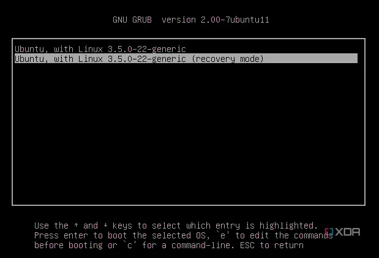

Troubleshooting
NVIDIA/AMD GPU Driver Conflicts
Ubuntu ships with open-source display drivers by default, but systems with dedicated NVIDIA or AMD graphics cards frequently experience screen tearing, extremely low resolution locked at 800x600, black screens on boot, or the desktop environment failing to load entirely after a kernel or driver update installs incompatible versions.
1. Boot to Recovery Mode
If your system shows a black screen or fails to load the desktop, Restart and hold Shift (BIOS) or Esc (UEFI) during boot to open the GRUB menu.

2. GRUB menu
In the GRUB menu, select "Advanced options for Ubuntu", and enter "Recovery Mode".


3. Open the Root shell terminal
The recovery menu will appear with several options. Use your arrow keys to scroll down and highlight root — Drop to root shell prompt then press Enter. This opens a terminal where you can type commands.